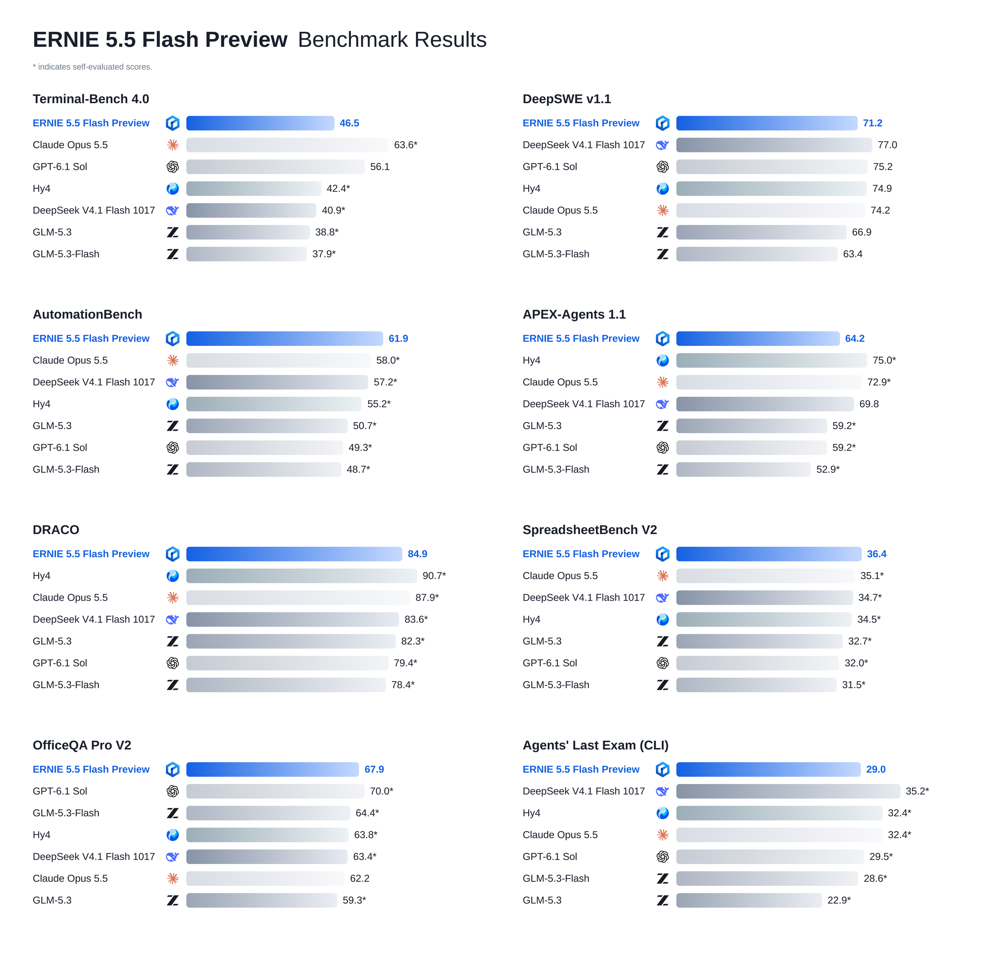

ERNIE 5.5 Flash Preview
Introduction
ERNIE 5.5 Flash Preview is the first post-trained model built on ERNIE 5.5 Flash Base, which we released earlier. It is a Mixture-of-Experts (MoE) language model with 280B total parameters, 14B of them active per token, and a 1M-token context window. It does well at coding, 3D modeling, knowledge work and content creation, scores competitively on major benchmarks, and still decodes quickly.
The Preview shares its architecture and tokenizer with ERNIE 5.5 Flash Base. Its new capabilities come from mid-training and post-training, and mid-training also extends the training context length from 128K to 1M tokens. Our blog post shows work the model completed end to end in an agent harness.
ERNIE 5.5 Flash Preview is an intermediate checkpoint from post-training. It already performs competitively among models of its size, but some capabilities may still fall short because training is not finished. Post-training is ongoing and ERNIE 5.5 Flash is improving quickly. We will watch how the Preview performs in real use, listen to user feedback, and address what we learn in the official release.
Highlights
The Preview is trained for the following kinds of work.
Coding and game development: Handles coding work that ranges from fixes in real codebases to building complex applications from scratch, and plans, executes and iterates steadily over long tasks. It knows how development is done in Unreal Engine, Unity and Godot. In a single 11-hour coding task it wrote a complete third-person wuxia game in C++ on Unreal Engine 5.8, and from game design documents it built nearly 100 mobile mini-games.
3D modeling and design: Works out shape, proportion and spatial relationships from a text description, then writes scripts that drive Blender and CAD software to build anything from engine parts to buildings. It can also bring existing assets into the same workflow to assemble large, detailed scenes.
Knowledge work: Takes scattered material, works through the steps a request calls for, and delivers professional-quality spreadsheets, documents or slide decks. It was trained in 300,000 workspaces for domains such as finance and law, holding 10 million reference files in more than 40 file types.
Video creation: Gathers, generates and arranges material, sets the visuals and pacing, and delivers a finished video, working for one to two hours on a single piece. It was trained in more than 150,000 creation environments for popular-science explainers, motion comics, creative edits and takes on trending topics.
Fast to serve, easy to build on: FP4 expert weights and the DSpark draft head make long-running agent tasks much faster, with little loss in accuracy. The architecture and tokenizer match ERNIE 5.5 Flash Base, so tooling built for the Base model carries over.
Model Overview
ERNIE 5.5 Flash Preview keeps the architecture of ERNIE 5.5 Flash Base and adds a DSpark draft head for speculative decoding. See the Base model card for architecture details.
| Key | Value |
|---|---|
| Modality | Text in, text out |
| Total Params | 280B |
| Activated Params per Token | 14B |
| Layers | 43 (1 dense + 42 MoE) |
| Hidden Size | 4096 |
| Attention | 37 × HCA (head dim 512) + 6 × MLA-DSA (head dim 256), 64 heads |
| Experts | 512 routed (top-10) + 1 shared |
| Vocabulary | 201,216 |
| Context Length | 1,048,576 |
| Thinking | On by default; turn off with enable_thinking: false; when on, reasoning_effort is low / medium / high (default high) |
| Precision | Blockwise FP8; routed experts in MXFP4 (W4A8, quantization-aware trained); FP8 KV cache; FP4 DSA indexer |
Model Downloads
| Model | Weights | Context | Download |
|---|---|---|---|
| ERNIE-5.5-Flash-Preview | FP8 (blockwise) + FP4 experts, with DSpark draft head | 1M | 🤗 Hugging Face · ModelScope |
| ERNIE-5.5-Flash-Preview-FP8 | FP8 (blockwise), with DSpark draft head | 1M | 🤗 Hugging Face · ModelScope |
| ERNIE-5.5-Flash-Preview-BF16 | BF16, with DSpark draft head | 1M | 🤗 Hugging Face · ModelScope |
The default repository contains the FP4 expert weights. On hardware without FP4 kernels, use the FP8 or BF16 repository. For fine-tuning, start from the BF16 repository.
Evaluation

The chart shows eight of the benchmarks, and the table below lists all 20. How to read the table:
- All ERNIE 5.5 Flash Preview scores are from our own evaluations.
- For other models, unmarked scores are taken from official reports or the Artificial Analysis (AA) leaderboard, and * marks our own evaluations. Where both are available, the cell shows the reported score first and our own second.
- † marks the text-only subset of HLE, and – means no result.
- All models are evaluated at their highest available reasoning setting. We use a benchmark's official harness when it has one. Otherwise, GPT-series models run in Codex, DeepSeek models run in DSH on some benchmarks, and all other models run in Claude Code.
| Benchmark | ERNIE 5.5 Flash Preview | Hy4 | DeepSeek-V4.1-Flash-1017 | GLM-5.3-Flash | GLM-5.3 | GPT-6.1 Sol | Claude Opus 5.5 |
|---|---|---|---|---|---|---|---|
| Agentic Coding | |||||||
| Terminal-Bench 4.0 | 46.5 | 44.4 / 42.4* | 42.3 / 40.9* | 35.8 / 37.9* | 41.8 / 38.8* | 56.1 | 66.4 / 63.6* |
| DeepSWE v1.1 | 71.2 | 74.9 | 77.0 | 63.4 | 66.9 | 75.2 | 74.2 |
| ProgramBench (Almost Solved) | 29.5 | 30.0 / 28.5* | 29.1 / 27.5* | 15.0* | 19.0 / 19.0* | – | 65.0 |
| NL2Repo-Bench | 64.8 | 65.8* | 68.1 / 62.7* | 56.3 / 57.5* | 58.0 / 58.8* | – | – |
| Terminal-Bench-Science 0.1 | 21.0 | 19.8 / 17.1* | 15.7 / 14.3* | 5.7* | 8.1 | 57.0 | 63.3 |
| CookieBench | 88.2 | 88.8* | 87.9* | 76.9* | 80.4* | 89.7* | 91.5* |
| BlenderWorld (text-only) | 79.0 | 76.8* | 79.2* | 71.4* | 69.7* | 85.3* | 86.1* |
| Knowledge Work | |||||||
| AutomationBench | 61.9 | 56.2 / 55.2* | 60.5 / 57.2* | 48.8 / 48.7* | 48.2 / 50.7* | 49.3* | 58.0* |
| APEX-Agents 1.1 | 64.2 | 77.6 / 75.0* | 69.8 / 43.9* | 52.8 / 52.9* | 56.6 / 59.2* | 60.0 / 59.2* | 73.5 / 72.9* |
| DRACO | 84.9 | 90.7* | 83.6* | 78.4* | 82.3* | 79.4* | 87.4 / 87.9* |
| SpreadsheetBench V2 | 36.4 | 34.5* | 34.7* | 31.5* | 32.7* | 32.0* | 35.1* |
| OfficeQA Pro V2 | 67.9 | 63.8* | 63.4* | 64.4* | 59.3* | 70.0* | 62.2 |
| General Agent | |||||||
| Agents' Last Exam (CLI) | 29.0 | 32.4* | 35.2* | 28.6* | 22.9* | 29.5* | 34.3 / 32.4* |
| SkillsBench 1.1 (text-only) | 73.5 | 77.4* | 67.5* | 65.4* | 62.0* | 72.6* | 71.8* |
| Toolathlon-Verified | 75.0 | 73.1* | 71.2* | 78.5 / 76.8* | 73.0 / 72.2* | 67.8* | 80.1* |
| MCP-Atlas | 84.6 | 83.0* | 77.8* | 78.8* | 82.4* | 81.0* | 84.2* |
| BrowseComp | 87.4 | 91.8* | 80.3* | 74.6* | 77.8* | 87.5* | 90.8 |
| Reasoning | |||||||
| HLE (w/o tools) | 46.4† | 46.7*† | 44.0† | 39.9 | 42.0† | 52.9 | 61.4 |
| AA-Omniscience-Public | 25.2 | 20.2* | 11.5* | 16.0* | 21.0* | 52.8* | 62.0* |
| AA-LCR v1.1 | 79.0 | 80.0* | 82.7 / 80.7* | 77.3* | 79.7 / 78.0* | 83.0 / 78.0* | 84.7 / 81.7* |
Inference Performance Optimization
ERNIE 5.5 Flash Preview is designed to be inexpensive to serve. The savings come from three places: the architecture, the way the model is trained, and the serving kernels.
The architecture is inherited from ERNIE 5.5 Flash Base and keeps each decoding step light. Of the 43 layers, 37 use Heavily Compressed Attention (HCA), which caches one entry per 128 tokens of history and so keeps the KV cache small. The other six keep token-level history but use sparse attention (DSA), so each step attends only to selected positions. On top of this, quantization and speculative decoding are trained together with the model under settings that match inference, and the serving kernels are tuned for the ERNIE 5.5 Flash architecture.
W4A8 quantization-aware training
The routed experts hold most of the model's parameters. They are stored in MXFP4 and run as W4A8 (4-bit weights, 8-bit activations). We apply W4A8 quantization-aware training during post-training, and the fake quantization in training uses the same granularity, scaling factors, and rounding rules as inference. Training and inference therefore agree numerically, which removes the accuracy gap that a mismatch between them would otherwise cause. Training throughput is largely unaffected, and the released weights deploy directly in W4A8, with no extra conversion or calibration.
All other weights stay in blockwise FP8, the KV cache is FP8, and the DSA indexer runs in FP4.
DSpark speculative decoding
In speculative decoding, a draft model proposes the next few tokens and the main model verifies them in a single forward pass. The Preview's draft model is DSpark, a draft head that proposes a whole block of tokens in parallel.
ERNIE 5.5 Flash is pre-trained with single-step ECHO MTP (multi-token prediction), which drafts tokens one after another. In post-training, ECHO can be trained further into multi-step MTP with dynamic depth sampling. It extrapolates well across steps: with 7 draft steps, it reaches an average acceptance length above 5.5 on real-world multi-turn conversations.
Autoregressive drafting (ECHO) and parallel drafting (DSpark) each do better on different tasks, depending on whether the output is high- or low-entropy, so post-training also trains DSpark. A single training setup supports both. DSpark is updated continuously as the main model changes, so the two stay aligned and the acceptance rate does not degrade. After training converges, online distillation adapts DSpark to a broader range of data, raising its acceptance length in production by more than 10%.
The Preview ships with DSpark only, and the head is included in the model weights; later releases will offer both DSpark and ECHO MTP. We recommend larger draft blocks (up to 7 tokens) at low concurrency and smaller blocks (2–3 tokens) at high concurrency.
Lightweight indexer with head routing
In the six DSA layers, a lightweight indexer scores past tokens and selects the 2,048 highest-scoring positions for attention. Two changes make this step cheaper. First, a plug-in head-routing module picks a subset of indexer heads for each query, which cuts the cost of computing the indexer logits. Second, a threshold-based pre-filter drops low-scoring candidates early. The filtering is exact, and even with TopK as large as 2,048 it removes much of the TopK computation. At a 1M-token context, it gives a 40% speedup.
Decoding kernel optimization
Every part of the decoding step is tuned for the ERNIE 5.5 Flash architecture.
- Attention and residual paths: Mathematically equivalent rewrites of the Virtual Head Attention (VHA) and mHC (Manifold-constrained Hyper-Connections) residual computations let fused Mega Kernels merge each operation with the lightweight operators around it, and the computation is reordered to hide more latency.
- HCA compression: HCA layers do not need to compress tokens at every decoding step, so compression runs separately on a side stream.
- MoE: For Multi-Router Latent MoE, a single Mega Kernel fuses routing, expert computation, and the projections into and out of the latent space, which avoids repeated kernel launches and shortens the serial MoE path.
- Scheduling: PDL (Programmatic Dependent Launch) and multi-stream scheduling cut serving overhead further.
Deployment
ERNIE 5.5 Flash Preview can be served in production with SGLang or vLLM. For full deployment instructions, see the SGLang Cookbook and vLLM-ERNIE.
The commands below set a 131,072-token context. For longer inputs, raise --context-length (SGLang) or --max-model-len (vLLM); both servers accept up to 1,048,576 tokens.
SGLang
Launch a container from the official prebuilt Docker image and open a shell in it:
bashdocker run -d -it --name ernie55 \ --gpus all \ --network host \ --ipc host \ -v ~/.cache/huggingface:/root/.cache/huggingface \ lmsysorg/sglang:latest docker exec -it ernie55 bash
Inside the container, start the server with DSpark enabled:
bashsglang serve \ --model-path baidu/ERNIE-5.5-Flash-Preview \ --host 0.0.0.0 \ --port 30000 \ --tp 4 \ --attn-dp-size 4 \ --context-length 131072 \ --max-running-requests 128 \ --speculative-algorithm DSPARK \ --reasoning-parser ernie55 \ --tool-call-parser ernie55 \ --enable-dp-lm-head \ --trust-remote-code
vLLM
Install vLLM and the ERNIE 5.5 plugin:
bashuv venv --python 3.12 ernie5-venv source ernie5-venv/bin/activate uv pip install vllm==0.32.0 uv pip install git+https://github.com/baidu/vLLM-ERNIE.git
Start the server:
bashexport VLLM_ENGINE_READY_TIMEOUT_S=3600 vllm serve baidu/ERNIE-5.5-Flash-Preview \ --trust-remote-code \ --host 0.0.0.0 \ --port 30000 \ --data-parallel-size 4 \ --enable-expert-parallel \ --kv-cache-dtype fp8 \ --max-model-len 131072 \ --reasoning-parser ernie5 \ --tool-call-parser ernie5 \ --enable-auto-tool-choice \ --attention-config '{"indexer_kv_dtype":"mxfp4"}' \ --speculative-config '{"method":"dspark","num_speculative_tokens":7,"draft_sample_method":"probabilistic"}'
Send Requests
Once the server is up, send a test request to check that it works.
bashcurl http://localhost:30000/v1/chat/completions \ -H "Content-Type: application/json" \ -d '{ "model": "baidu/ERNIE-5.5-Flash-Preview", "messages": [{"role": "user", "content": "Explain speculative decoding in two sentences."}], "max_tokens": 1024 }'
The model always thinks before it answers. In the response, the reasoning is in message.reasoning_content and the answer is in message.content.
Fine-tuning
ERNIE 5.5 Flash Preview can be fine-tuned with NVIDIA Megatron-Bridge; see the ERNIE 5.5 example. We recommend starting from the BF16 repository.
License
ERNIE 5.5 Flash Preview is released under the Apache License 2.0; see LICENSE for details. This license covers the ERNIE 5.5 Flash Preview weights only. ERNIE 5.5 Flash Base remains under its own license, the ERNIE 5.5 Flash Base Model License Agreement v1.0. Copyright © 2026 Baidu. All Rights Reserved.
Citation
If you use ERNIE 5.5 Flash Preview in your research or projects, please cite our blog post:
bibtex@misc{ernie5.5flashpreview, title = {ERNIE 5.5 Flash Preview}, author = {{Baidu ERNIE Team}}, year = {2026}, howpublished = {ERNIE Blog}, url = {https://ernie.baidu.com/release/ernie-5-5-flash-preview/} }
Contact
For questions, contact us at Baidu_ERNIE@baidu.com.